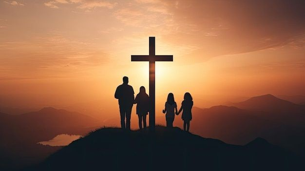

Viver o Evangelho
Procuramos viver o Evangelho de forma autêntica, com Cristo no centro da nossa caminhada.
Na Videira, buscamos viver o Evangelho de forma autêntica e transformadora. Uma Igreja de Vencedores, onde cada membro é um sacerdote e cada casa uma extensão da Igreja.

Na Videira, buscamos viver o Evangelho de forma autêntica, relevante e transformadora. Acreditamos numa igreja que se constrói também nas relações e no dia a dia de cada casa.
.jpg)
O nosso encargo é edificar uma Igreja de vencedores, onde cada membro é um sacerdote e cada casa uma extensão da Igreja, conquistando a nossa geração para Cristo através de células que se multiplicam.
É uma visão que nos chama a viver a fé com intencionalidade, a cuidar uns dos outros e a levar a mensagem de Cristo para além das paredes do templo.
O Evangelho torna-se visível na forma como caminhamos juntos, acolhemos pessoas e servimos a nossa geração.
Procuramos viver o Evangelho de forma autêntica, com Cristo no centro da nossa caminhada.
Somos chamados a caminhar em comunhão, cuidar uns dos outros e fazer da igreja uma família.
Queremos conquistar a nossa geração para Cristo através de uma fé viva e de células que se multiplicam.
“Uma comunidade de fé, amor e propósito — vivendo o Evangelho de forma autêntica e transformadora.”Videira Benguela
Reunimo-nos para celebrar e continuamos a crescer durante a semana, nas casas, através das células.
Um tempo de louvor, palavra e comunhão. Será muito bem-vindo.
COMO CHEGAR ↗Pequenos grupos para estudo bíblico, oração e relacionamentos profundos. Cada casa pode ser uma extensão da Igreja.
ENCONTRAR UMA CÉLULA ↗Independentemente de onde está na sua jornada espiritual, queremos recebê-lo. Venha como é e descubra uma comunidade que deseja crescer em Cristo e caminhar consigo.
PREPARE A SUA VISITA ↗.jpg) Uma comunidade que caminha junta.
Uma comunidade que caminha junta.Quer conhecer a igreja, saber mais sobre as células ou descobrir como chegar? Fale connosco. Teremos todo o gosto em ajudar.